すっかり遅くなってしまいましたが、ミルモでポン！×SPINNSコラボグッズの後編をまとめました。
グッズ全体の内容については前編を参照くださいませ。
それでは私が購入した残りのグッズを紹介していきます！
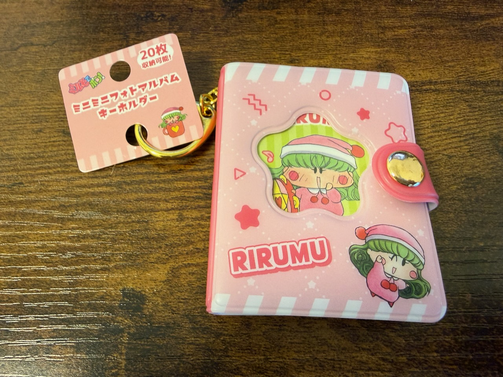
ミニミニフォトアルバムキーホルダーです。
ミルモ・リルム・ヤシチ・ムルモの４種類の中から、リルムちゃんを選びました〜。
アルバムはボタンで綴じられていて、ボタンを外すと中が開くようになっています。
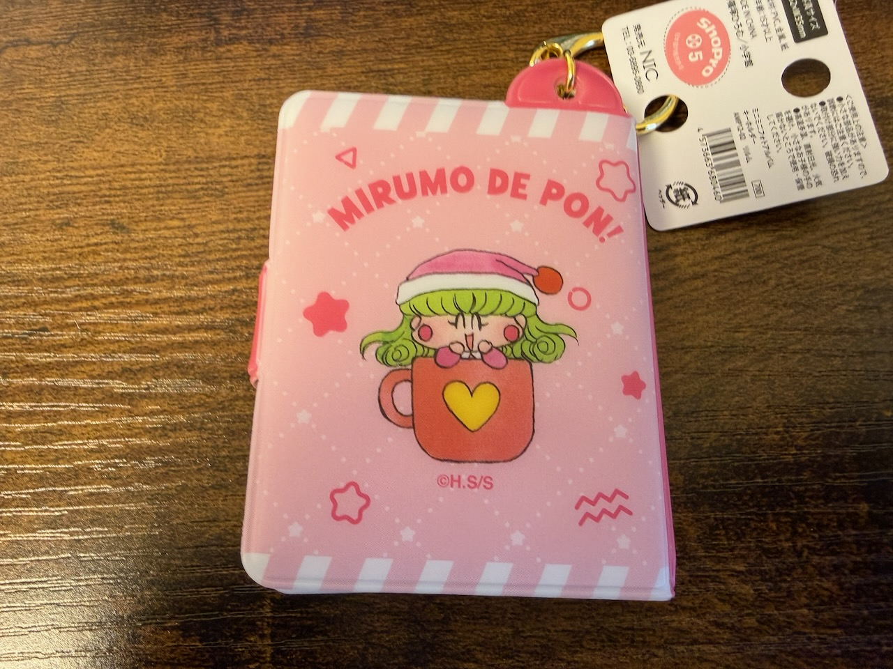
裏表紙にもリルムちゃんがいました！
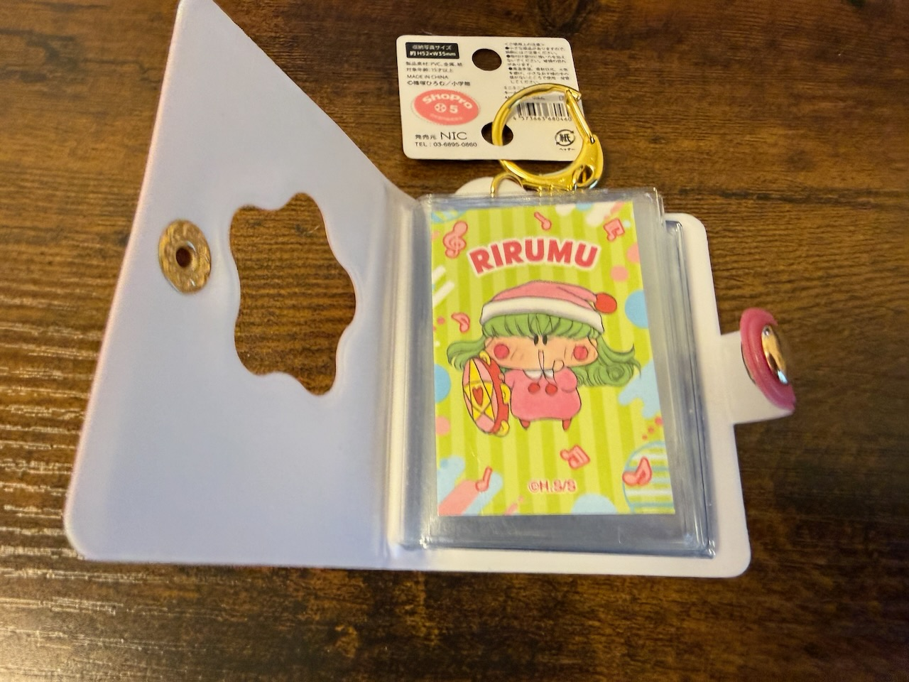
中を開くとクリアファイルのように好きな紙を挟み、自分だけのアルバムを作れるようになっています。
表紙が窓枠になっているので、１ページ目は表紙として飾れちゃいます。
写真で見ると普通のアルバムに見えますが、これが手のひらよりも小さいサイズで作られているのですよ！
私が小学生の頃（昭和時代）にもちっちゃいメモ帳があって、そこに絵や文字を書き込んだりして自分だけの世界を作り出していたことをついつい思い出してしまいました。
今の令和の子供たちにも、自分だけのちっちゃな世界を作って遊ぶ楽しさを味わってほしいなぁ。
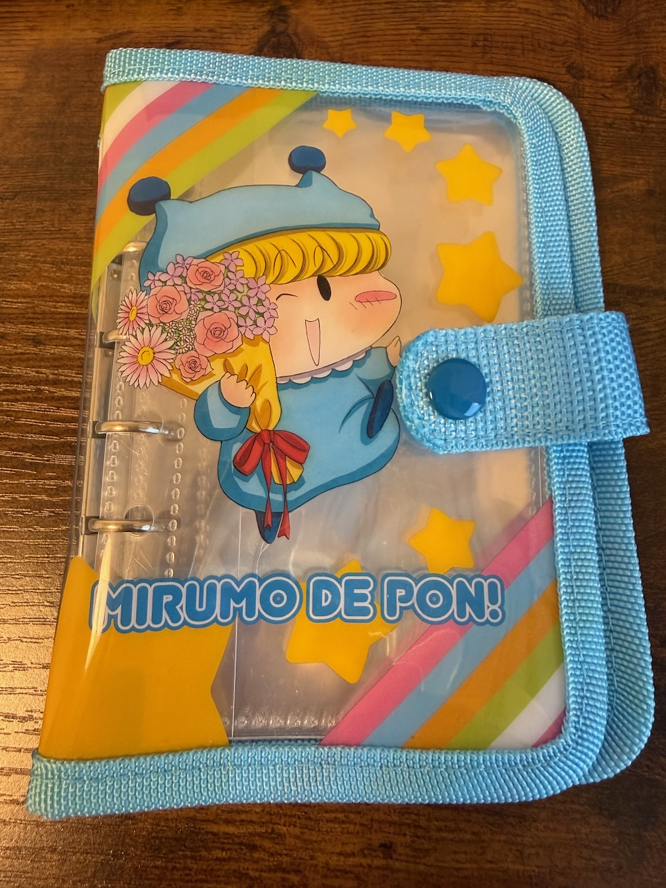
続いてシールバインダーです。
こちらは４人集合バージョンとミルモバージョンの２種類があって、後者の方はSPINNS限定となっています。
なぜ表紙に<花束を抱えるミルモ！？と思わずツッコミたくなったりしますが・・そんなことはない？(^◇^;)
シールバインダーは手帳でよく見られる６つ穴タイプなので、利便性あってぐ〜です。
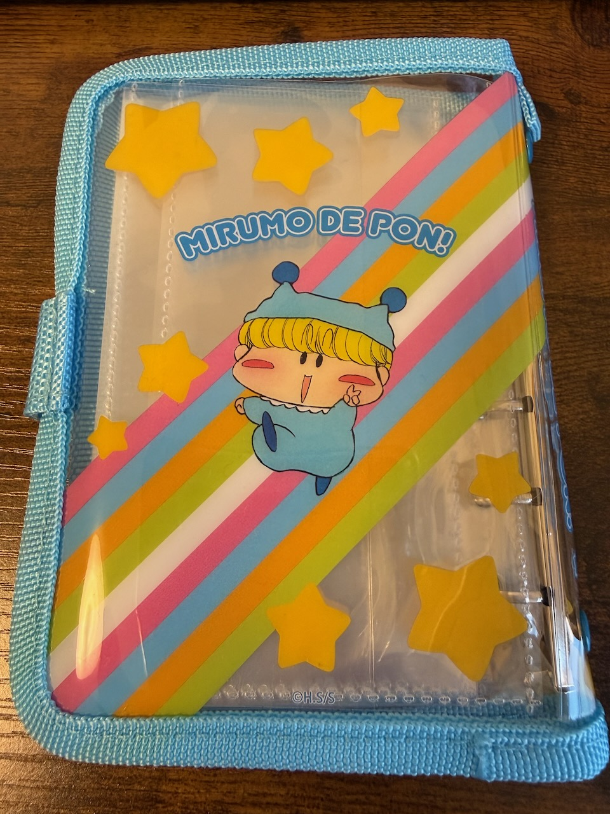
こちらも裏表紙にしっかりミルモがいます！
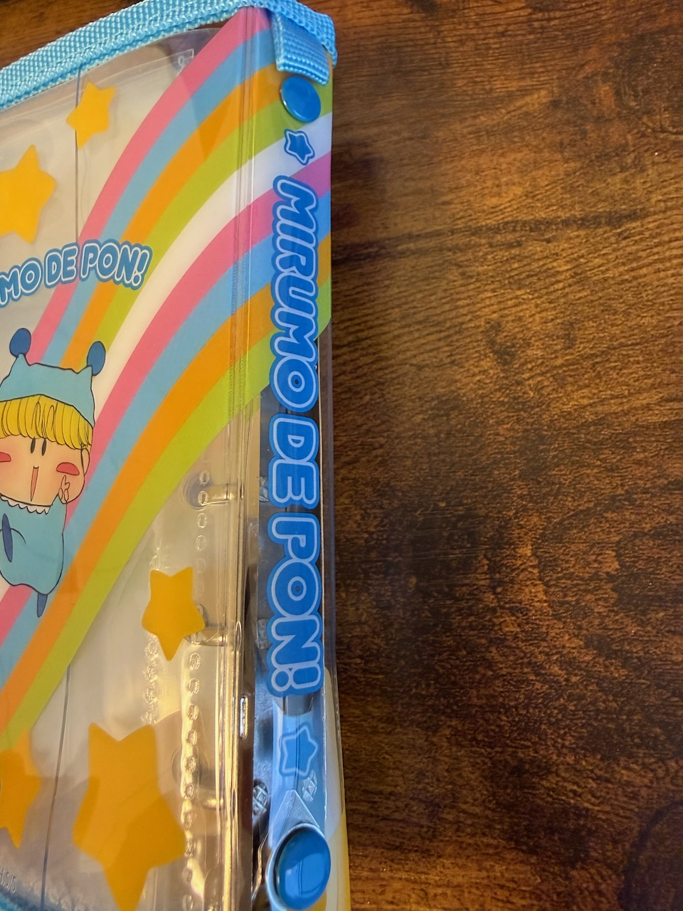
厚みがあるので背表紙にも柄がありますよ。
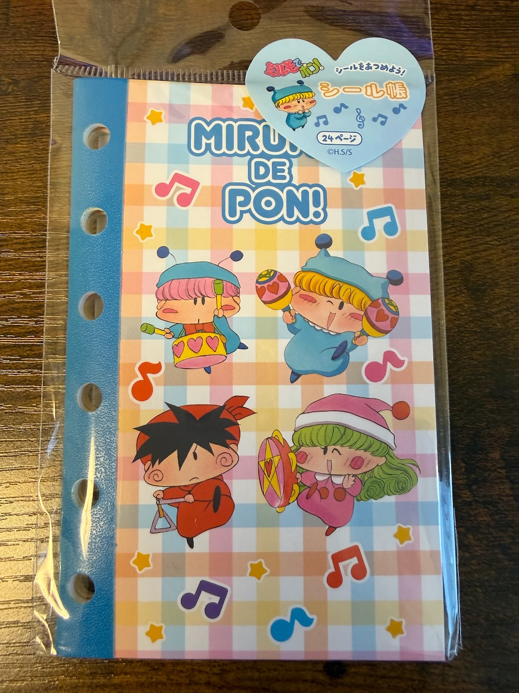
シールバインダーの中を見る前に、先にシール帳を紹介しますね。
こちらも２種類あって、私が購入したのはSPINNS限定バージョンの方になります。
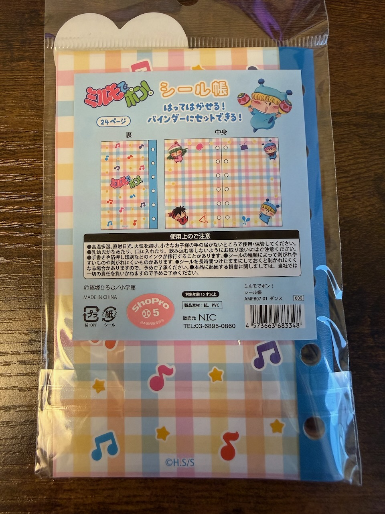
シール帳は24ページで、シールを貼って剥がせる台紙になっています。
SPINNS限定バージョンは台紙がチェック模様になっていて賑やかですね（もう一方は無地柄タイプ）
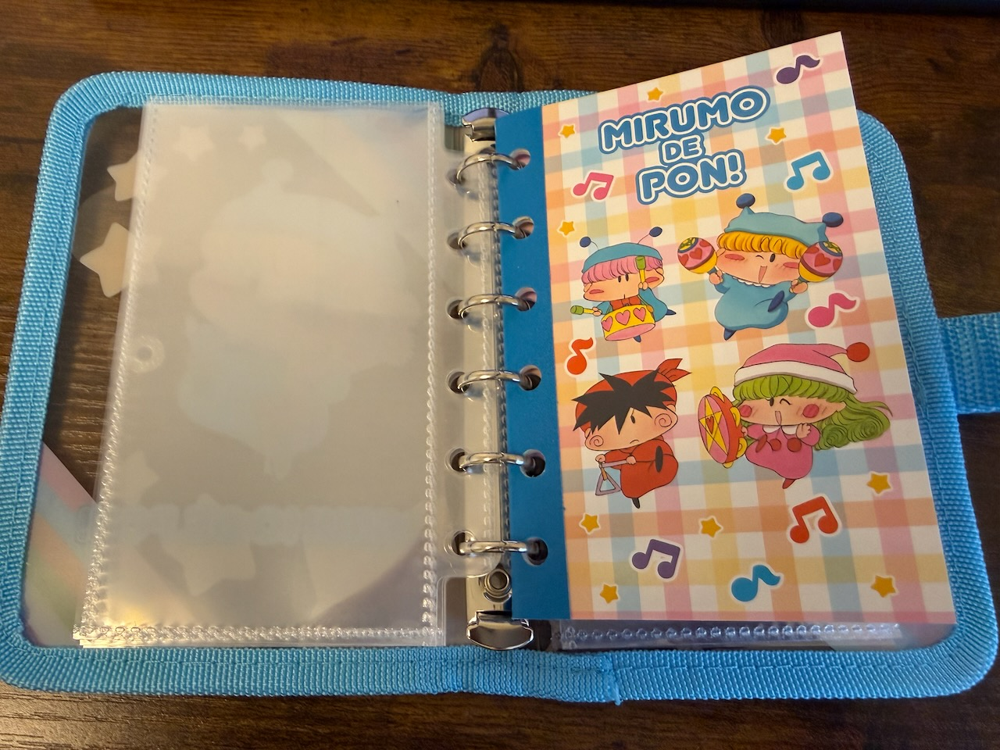
シール帳にも６つ穴が開いているので、シールバインダーに挟んでみました。
シールバインダーのクリアファイルにシールを入れて、シール帳にシールを貼るという使い方ができそうです。
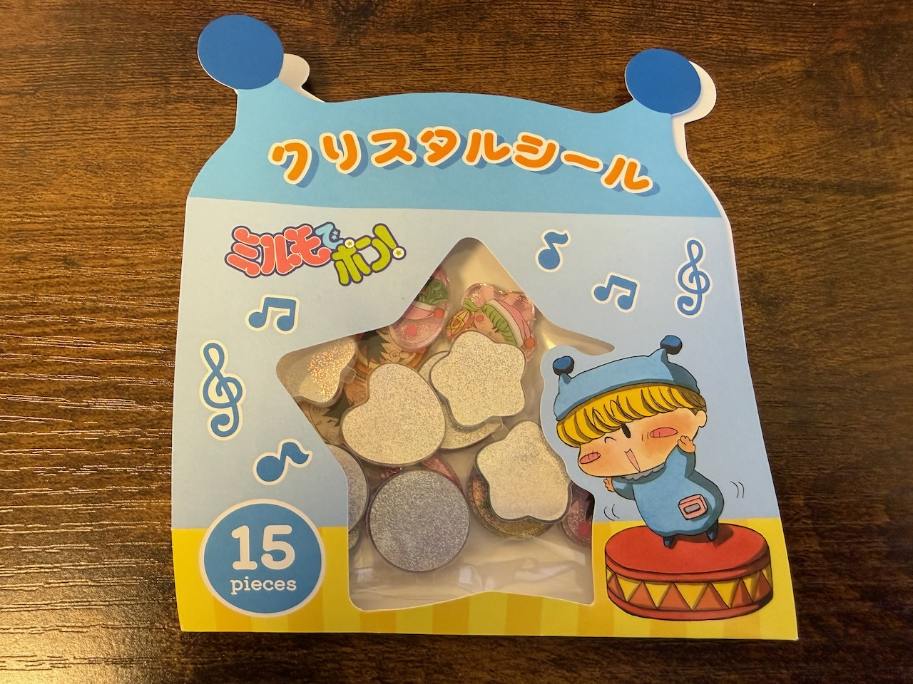
続いてシールの方です。
フレークシール、タイルシール、クリスタルシールの３種類があり、私はクリスタルシールをゲットしました。
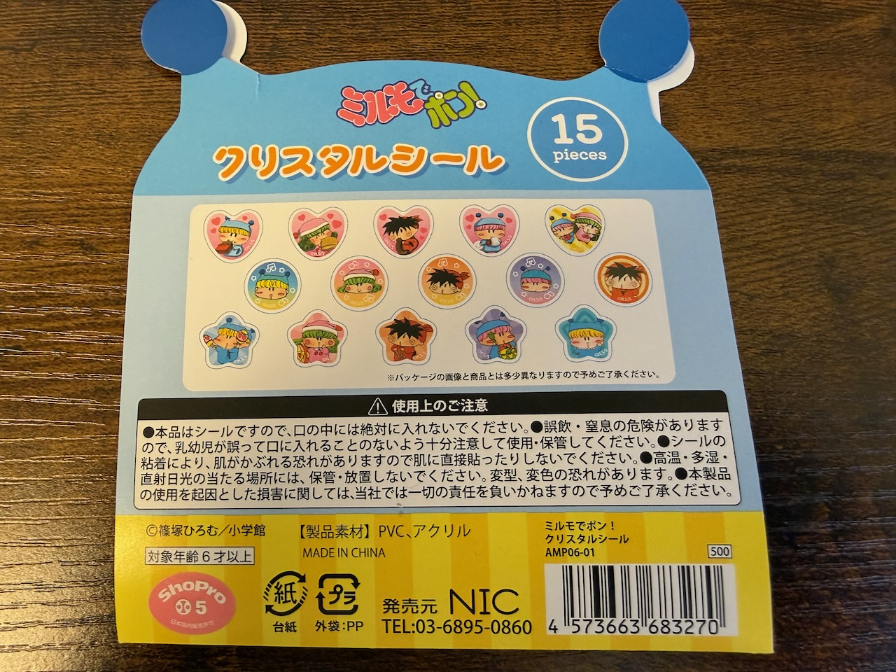
１円玉サイズのシールが15枚入っていますが、1枚がなかなかの分厚さだったりします。
最近はこういう立体形状のシールが流行りなのですね。
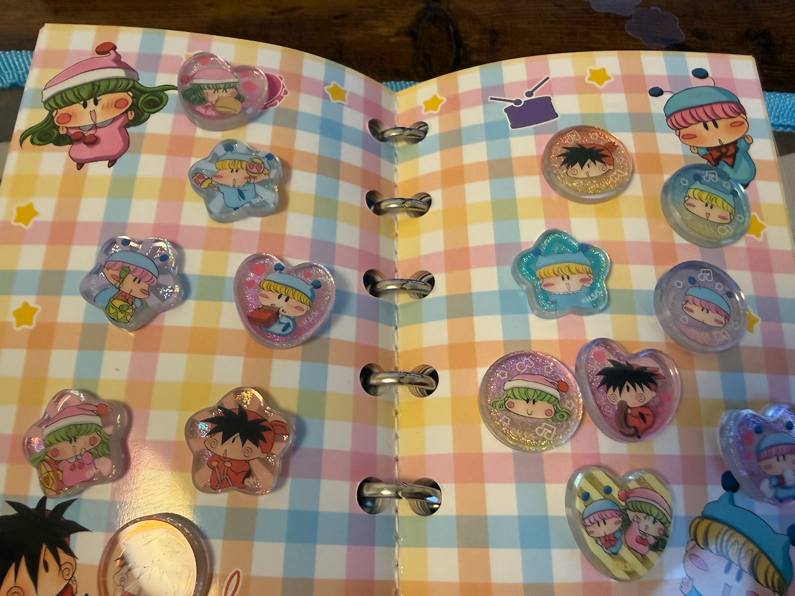
ということでシール帳にぺたぺた貼ってみました〜。
何も考えずに貼ってるので雑ですが、どう貼るのが正解なのでしょーか？(^◇^;)
SPINNSコラボグッズはこれで以上です。
いやはや、数が多すぎてまとめる方も大変でした・・(^^;
かつてないほどの超大量グッズ販売でしたが、売れ行きも良さそうでしたのでまたの企画に期待したいです！
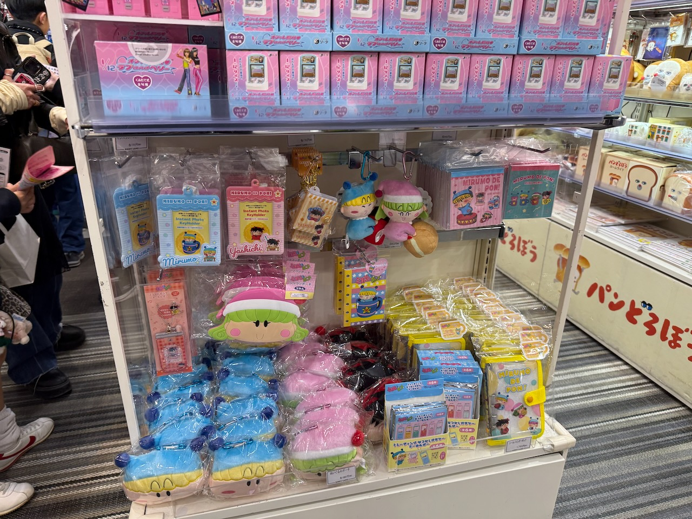
補足ですが、今回のグッズの一部はキディランド（一部店舗）でも扱われていたようです。
写真は３月２２日に原宿のキディランドで見かけたグッズたちですが、どうも品揃えに偏りがあるような・・（ムルモが全然いない！？）
それでは最後に恒例の記念イラストで締めくくりたいと思います。
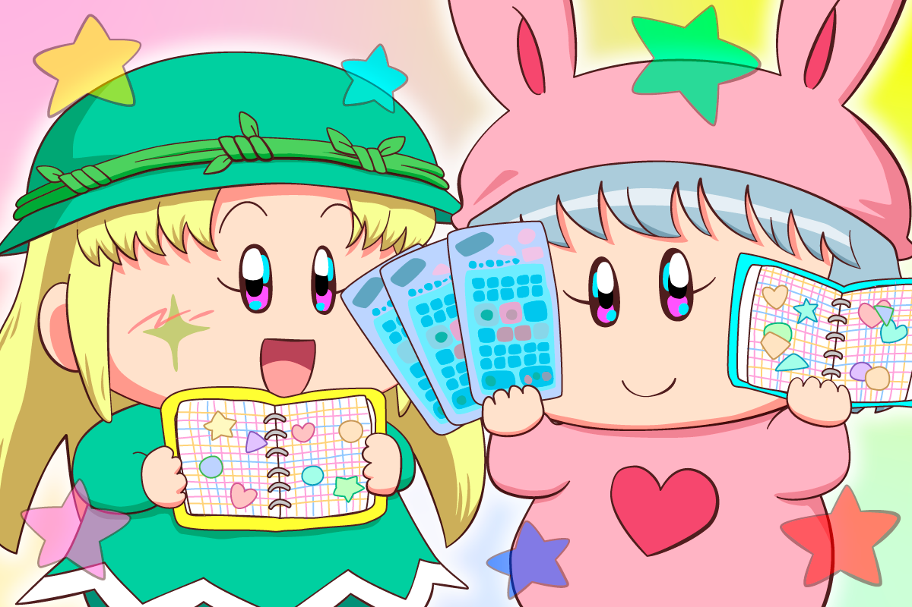
シール帳でドヤ顔する女子たちを描きました。
シールの貼り方にも性格が表れているような・・。
ムルモがそれに気づいて、余計な一言を挟んでケンカになりそうな予感がします(^^;
(2026/6/21)